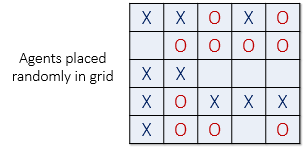

Frank McCown
Computer Science Department
Harding University
fmccown@harding.edu
Racial segregation has always been a pernicious social problem in the United States. Although much effort has been extended to desegregate our schools, churches, and neighborhoods, the US continues to remain segregated by race and economic lines. Why is segregation such a difficult problem to eradicate?
In 1971, the American economist Thomas Schelling created an agent-based model that might help explain why segregation is so difficult to combat. His model of segregation showed that even when individuals (or "agents") didn't mind being surrounded or living by agents of a different race, they would still choose to segregate themselves from other agents over time! Although the model is quite simple, it gives a fascinating look at how individuals might self-segregate, even when they have no explicit desire to do so.
In this assignment, students will create a simulation of Schelling's model. The user should be able to set a number of parameters of the model and watch it go. Bonus is given for implementing extra model features.
| Summary | Watch as two population groups self-segregate over time into clumps. This assignment gives students the change to implement a game-like model from the social sciences that gives an unintuitive result. It gives the instructor a chance to address a societal problem that students are already naturally interested in. |
| Topics | 2D arrays, generating random numbers. In advanced courses other topics can be addressed like: timers, using various GUI widgets, MVC, threads, etc. |
| Audience | CS1 or above |
| Difficulty | This assignment is intermediate to advanced. Students should be given a week or two to complete it. |
| Strengths | 1) It addresses a real-world problem that students are naturally interested in. 2) It's visually appealing and fun to play with. 3) Can be implemented in a console using X's and O's or in a GUI or web environment. 4) Uses 2D arrays and simple algorithms which do not require advanced data structures. |
| Weaknesses | Some students struggle with going outside the bounds of a 2D array (welcome to programming!). Debugging a program that manipulates a large 2D array can be daunting to some. |
| Dependencies | Requires how to create and manipulate a 2D array, how to generate random numbers with particular distributions. |
| Variants | 1) Allow students to develop different algorithms for moving dissatisfied agents. 2) Will the model behave differently if the world "wraps" around or is formed by different shapes? 3) Give the students the solution and have them run the simulation with various Similarity parameters and graph the average number of rounds it takes before all agents are satisfied. 4) This assignment is a good way to emphasize code reusability: after students have turned in their program, have them introduce a third agent type. How many lines of code did they have to modify? |
Schelling's model will now be explained with some minor changes. Suppose there are two types of agents: X and O.
The two types of agents might represent different races, ethnicity, economic status, etc.
Two populations of the two agent types are initially placed into random locations
of a neighborhood represented
by a grid. After placing all the agents in the grid, each cell is either occupied
by an agent or is empty as shown below.

Now we must determine if each agent is satisfied with its current location. A satisfied agent is one that is surrounded by at least t percent of agents that are like itself. This threshold t is one that will apply to all agents in the model, even though in reality everyone might have a different threshold they are satisfied with. Note that the higher the threshold, the higher the likelihood the agents will not be satisfied with their current location.
For example, if t = 30%, agent X is satisfied if at least 30% of its neighbors are also X. If fewer than 30% are X, then the agent is not satisfied, and it will want to change its location in the grid. For the remainder of this explanation, let's assume a threshold t of 30%. This means every agent is fine with being in the minority as long as there are at least 30% of similar agents in adjacent cells.
The picture below (left) shows a satisfied agent because 50% of X's neighbors are also X (50% > t). The next X (right) is not satisfied because only 25% of its neighbors are X (25% < t). Notice that in this example empty cells are not counted when calculating similarity.

When an agent is not satisfied, it can be moved to any vacant location in the grid. Any algorithm can be used to choose this new location. For example, a randomly selected cell may be chosen, or the agent could move to the nearest available location.
In the image below (left), all dissatisfied agents have an asterisk next to them.
The image on the right shows the new configuration after all the dissatisfied
agents have been moved to unoccupied cells at random. Note that the new configuration may
cause some agents which were previously satisfied to become dissatisfied!
All dissatisfied agents must be moved in the same round. After the round is complete, a new round begins, and dissatisfied agents are once again moved to new locations in the grid. These rounds continue until all agents in the neighborhood are satisfied with their location.
The example below was implemented using HTML5 and jQuery. Press Reset to re-initialize the grid and Start to begin the simulation. You can experiment with a number of parameters and see how the model behaves. For example, increase Similar to 50% and see how that affects the amount of "clumping". What happens when Similar is set to 70%? What happens when one population is much larger than the other (75/25)?
Simulation by Frank McCown
| Your browser must support JavaScript for the simulation to work. |
| Similar: % | |
| Red/Blue: % | / |
| Empty: % | |
| Size: | |
| Delay: ms |
I'd like to thank David Easley and Jon Kleinberg whose excellent book Networks, Crowds, and Markets first introduced me to Schelling's Segregation Model.